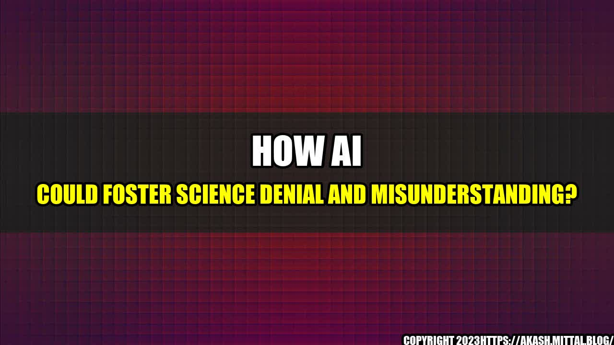

How AI Could Foster Science Denial and Misunderstanding?

Unintended Consequences of Inaccurate Information
Interesting Story
John is a self-proclaimed guru of science. He feels that he knows everything about science and its associated disciplines. He wakes up every morning, reads the news, and visits various websites and forums to gain more knowledge about new discoveries.
One day, while browsing the internet, he read an article that claimed climate change is a hoax, backed by a renowned scientist. The article claimed that the Earth's temperature has always fluctuated, and there is no irrefutable evidence of any significant changes.
John believed the article and shared it with all of his friends and family, thinking he had found evidence to support his beliefs. He had no idea that the article was generated by ChatGPT, an AI-powered language model, designed to generate human-like text.
This scenario is not hypothetical and has already happened. The risk of AI-generated misinformation is real, and it could have significant consequences on public opinion and policymaking, leading to science denial, confusion, and mistrust.
The influence of AI on science denial and misunderstanding can be traced back to a few incidents in recent years. One such example is the case of GPT-2, a large and powerful AI model used to generate news articles and other written material. In 2019, OpenAI, the company that developed GPT-2, refused to release the model's full version, citing concerns about its potential misuse, including perpetuating fake news and disinformation.
A similar case occurred with Grover, another AI model that was designed by a team of researchers to mimic fake news generators. The researchers trained Grover on a dataset of fake news articles, enabling it to produce false information with high accuracy. The researchers made Grover open-source to raise awareness about the dangers of automated fake news and educate people on how to detect and avoid using it.
Another example is the common practice of search engines to display the most popular results or to prioritize results based on the user's search history. This algorithmic bias can lead to a feedback loop of misinformation and reinforce existing beliefs, leading to confirmation bias and scientific denial.
Curated by Team Akash.Mittal.Blog
Share on Twitter Share on LinkedIn